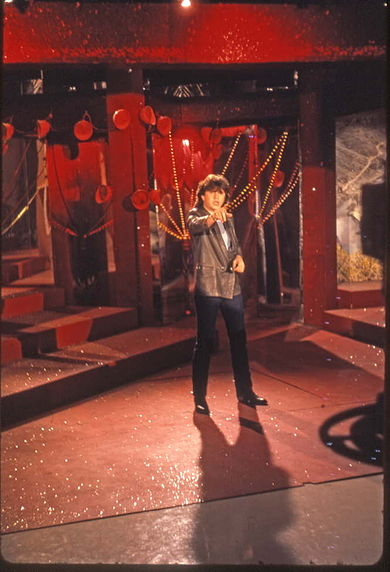

Maitre gims
Membre du groupe de hip-hop Sexion d'Assaut, il poursuit une carrière individuelle sous le nom de Maître Gims : en 2013, il sort son premier album, Subliminal qui se vend à plus d'un million d'exemplaires et culmine à la deuxième place du classement des albums français. Puis il sort sa réédition : Subliminal la face cachée. Suivent les albums Mon cœur avait raison (2015) et Ceinture noire, et ses deux rééditions (2018, 2019)
Mes morceaux préféré
- Bella
- Hola senorita
- Est-ce que tu m'aimes
- Tout donner
- Mi gna
Le lien vers sa chaîne youtube ici
Dalida
Iolanda Cristina Gigliotti, dite Dalida, née le 17 janvier 1933 au Caire (Égypte) et morte le 3 mai 1987 à Paris 18e (France), est une chanteuse et actrice italienne naturalisée françaisea. Issue d'une famille italienne installée en Égypte, elle participe à des concours de beauté au début des années 1950 et tourne quelques films au Caire. Résidant en France à partir de 1954, elle connaît son premier succès de chanteuse avec le titre Bambino en 1956. Se façonnant un répertoire regroupant plus de sept cents chansons interprétées en plusieurs langues, elle devient une grande figure de la chanson française et bénéficie d'une popularité dépassant la scène francophone.

Mes morceaux préféré
- Parole, parole
- Helwa Ya Balady
- Laissez-moi danser
- Mourrir sur scène
- Love in Portofino
Le lien vers sa chaîne youtube ici
Balavoine
Daniel Balavoine, né le 5 février 1952 à Alençon (Orne) et mort le 14 janvier 1986 aux environs de Rharous (région de Tombouctou, Mali), est un auteur-compositeur-interprète et musicien français. Débutant à la fin des années 1960 comme chanteur de bal à Pau, il reprend Bob Dylan, avant d'intégrer de multiples groupes de rock où il signe ses premières compositions1. Il se lance en solo en 1973, très inspiré par le rock progressif d'Outre-Manche (Genesis, Supertramp ou Queen) et connait des débuts difficiles, manquant de tout abandonner2.
Mes morceaux préféré
- Parole, parole
- Helwa Ya Balady
- Laissez-moi danser
- Mourrir sur scène
- Love in Portofino
Le lien vers sa chaîne youtube ici